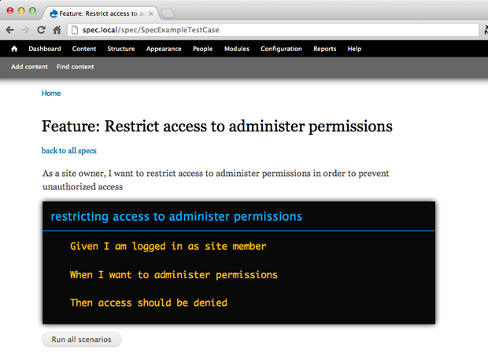

Spec
Spec is a simple BDD tool created for Drupal. It builds on top of a set of conventions of how to structure tests with SimpleTest and doesn't require any other external library.
Background
After some time of actively practicing BDD in Drupal projects following the predominant Behat/Cucumber approach, I've began to realize that even though the BDD methodology works well for me, Behat as a tool keeps getting in my way.
What I've noticed is that one of Behat's main features – automatic mapping of steps and step definitions – comes with a crucial negative side effect. As soon as you build up your library of step definitions, you inevitably change the way you spec a feature. You start writing sequences of script-like steps phrased to match regular expression patterns, rather than crafting concise scenarios in a natural language that reads nicely. The urge to re-use step definitions as efficiently as possible is strong.
BDD's major advancement from classic TDD though isn't the re-usability of test code in the form of step definitions. This is a Behat/Cucumber idea. At its core, BDD's main innovation is the extra step at the beginning, when you focus solely on writing clear and well-readable specs without worrying about code yet. No regular expression pattern should force us into writing bad specs. Quality of specs is more important than re-usability of test code.
A new approach
I wanted to get back to a simple way of quickly jotting down nice specs for a feature and worry about test code later. Ideally, I'd still be able to re-use code that I've written before. Also, I couldn't find a good reason as to why I need these extra layers of feature and step definition files which Behat introduces. All of this can be done in SimpleTest too.
Consider this approach of using a set of conventions for organising SimpleTest code:
1. spec feature
class RestrictAccessToManagePermissionsTestCase extends SpecTestCase {
/* Scenarios */
function testDenyAccessToSiteMembers() {
// Given I am logged in as site member
// When I want to administer permissions
// Then access should be denied
}
}
As in Behat, a TestCase class corresponds to a feature, a test method to a scenario and each inline comment with a Given/When/Then keyword to a scenario step. But in this approach, steps aren't matched by any step definition and thus can be phrased however appropriate.
2. write test code
class RestrictAccessToManagePermissionsTestCase extends SpecTestCase {
/* Scenarios */
function testDenyAccessToSiteMembers() {
// Given I am logged in as site member
$this->loginAs('member');
// When I want to administer permissions
$this->administerPermissions();
// Then access should be denied
$this->assertAccessDenied();
}
/* Scripts */
proteced function loginAs($user) { ... }
proteced function administerPermissions() { ... }
proteced function assertAccessDenied() { ... }
}
Each scenario step is followed by one script method containing the actual test code. Factoring all test code into separate script methods is an important convention. We want as little code as necessary inside scenario methods in order to keep our specs readable. Plus, script methods allow us to re-use test code.
With this simple convention, specs remain decoupled from test code without sacrificing re-usability nor readability.
3. run specs
Behat's clean output of test results in the console showing which scenario step has failed is pretty cool. I didn't want to miss this feature, so I built the Spec module to provide me with something alike. Spec understands SimpleTest code that has been organised by the conventions above and generates Behat-like output of results.
In addition to running specs from the console, Spec also provides a GUI to view, run and create specs (planned) in the browser.
Beyond simple scenarios, Spec supports scenario outlines which are a great way to group identical scenarios with differing parameters:
function testRestrictingAccessToAdministerPermissionsOutline() {
while ($params = $this->outline(array(
array(
'user' => 'member',
'access denied' => TRUE,
),
array(
'user' => 'admin',
'access denied' => FALSE,
),
))) {
// Given I am logged in as @user
$this->loginAs($params['user']);
// When I want to administer users
$this->administerPermissions();
if ($params['access denied']) {
// Then access should be denied
$this->assertAccessDenied();
}
else {
// Then access should be granted
$this->assertAccessNotDenied();
}
}
}
The Spec module contains a comprehensive annotated example of how to structure a test for Spec (spec_example.test).

-
 Follow @alexthewilde and get the latest news on BDD with Drupal.
Follow @alexthewilde and get the latest news on BDD with Drupal.
Need someone to teach you BDD?
Please contact me for on-site training workshops.